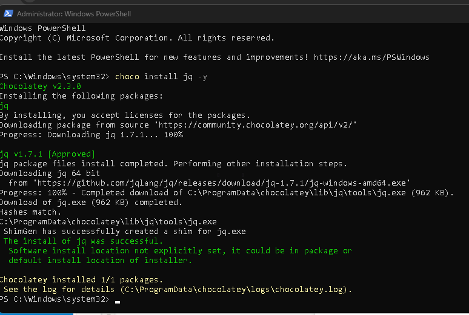

Mastering JSON Processing with jq: A Beginner's Guide
JSON (JavaScript Object Notation) is a lightweight data format that's become the standard for data exchange across the web. Whether you're pulling data from APIs, working with configuration files, or processing logs, chances are you'll encounter JSON. However, handling JSON data from the command line can be cumbersome without the right tool. That's where jq comes in.
What is jq?
jq is a powerful command-line tool specifically designed for processing JSON data. Think of it as sed or awk for JSON files: it's flexible, fast, and, once you get the hang of it, incredibly easy to use. With jq, you can slice, filter, map, and transform JSON data directly from your terminal, making it an invaluable tool for developers, sysadmins, and data analysts alike.
Why Use jq?
Here are a few reasons why jq should be in your toolkit:
-
Efficient Data Parsing:
jqallows you to parse and navigate JSON data structures with ease. -
Powerful Filtering: Extract only the data you need using powerful filtering capabilities.
-
Transformation and Formatting: Transform JSON data into different formats or modify it on the fly.
-
Scripting Friendly: Perfect for automation and scripting within shell scripts or command-line operations.
Getting Started with jq
Installation
Before you start using jq, you need to install it on your machine. Here’s how to install it on different operating systems:
- macOS: You can use Homebrew to install
jqwith the following command:
brew install jq
- Linux: Use your package manager. For example, on Ubuntu:
sudo apt-get install jq
- Windows: Download the executable from the official
jqwebsite and add it to your system path.

Basic Usage
Let's dive into some basic commands to get a feel for how jq works.
- Parsing JSON Data:
Suppose you have a JSON file nameddata.json:
{
"name": "Alice",
"age": 30,
"city": "New York"
}
To extract the name from this JSON file, you can run:
jq '.name' data.json
Output:
"Alice"
- Filtering Arrays:
If you have an array of objects and want to filter based on certain criteria,jqmakes this straightforward.
[
{ "name": "Alice", "age": 30 },
{ "name": "Bob", "age": 25 },
{ "name": "Carol", "age": 35 }
]
To filter out people who are 30 or older:
jq '.[] | select(.age >= 30)' data.json
Output:
{ "name": "Alice", "age": 30 }
{ "name": "Carol", "age": 35 }
- Transforming Data:
You can also transform data structures. For example, to extract just the names into a list:
jq '[.[] | .name]' data.json
Output:
["Alice", "Bob", "Carol"]
- Modifying JSON:
jqalso allows you to modify JSON data. For example, to change the name "Alice" to "Alicia":
jq '(.[] | select(.name == "Alice") | .name) = "Alicia"' data.json
This command outputs the modified JSON without changing the original file.
- Combining Commands:
You can chain multiple commands together using pipes (|), similar to how you would use them in a Unix shell. This allows you to build complex queries that are still easy to read and understand.
Advanced Features
Once you're comfortable with the basics, jq offers a range of advanced features:
-
Recursive Descent (
..): A powerful operator that allows you to search through all levels of a JSON object. -
Conditionals and Functions: Write conditional statements or use built-in functions for more complex operations.
-
Scripting: Combine
jqwith shell scripts to automate your JSON processing tasks.
Practice Makes Perfect
The best way to learn jq is by doing. Here are some resources to help you practice and deepen your understanding:
-
jq Manual: The official manual is an exhaustive resource for learning
jqsyntax and features. Read it here. -
jq Play: An interactive online playground to test your
jqcommands in real-time. Try it here. -
Hands-On Tutorials: Several online tutorials walk through different
jquse cases. Check out this one.
Conclusion
jq is an incredibly powerful tool for anyone who regularly works with JSON data. By mastering jq, you can simplify your workflow, automate repetitive tasks, and unlock new possibilities for data processing and manipulation. So, open up your terminal and start experimenting with jq today!
Happy JSON hacking!
Feel free to use this blog post to help others understand and start using jq!
References
https://community.chocolatey.org/packages/jq
🔗 Connect with me:
-
💼 LinkedIn: https://www.linkedin.com/in/rifaterdemsahin/
-
🐦 Twitter: https://x.com/rifaterdemsahin
-
🎥 YouTube: https://www.youtube.com/@RifatErdemSahin
-
💻 GitHub: https://github.com/rifaterdemsahin
Imported from rifaterdemsahin.com · 2024